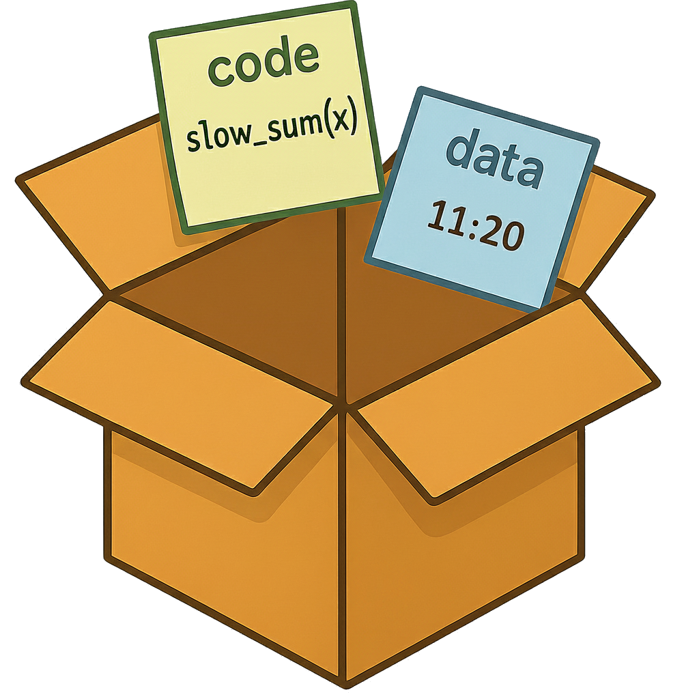
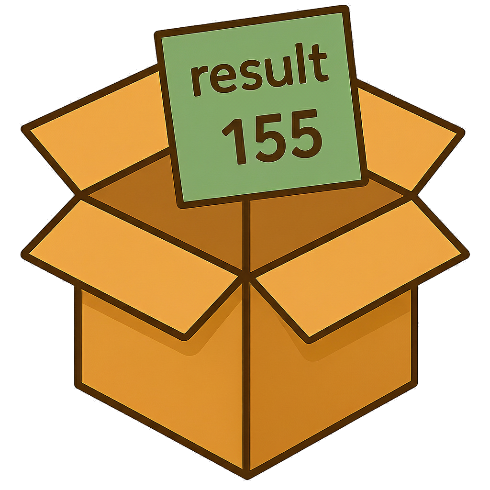

library(future)
plan(multisession)
ys <- xs |> furrr::future_map(slow_sum)
future.p2p: Peer-to-Peer
Compute Clusters in R
- Share compute among friends
Henrik Bengtsson
University of California, San Francisco
R Foundation, R Consortium
@HenrikBengtsson


LatinR 2025 (2025W49)
Sharing compute among friends - it’s easy!
library(future)
plan(future.p2p::cluster, cluster="alice/friends")
ys <- xs |> furrr::future_map(slow_sum)
R evaluates code sequentially
R code
y1 <- slow_sum( 1:10) # 1 minute
y2 <- slow_sum(11:20) # 1 minute
y3 <- slow_sum(21:30) # 1 minuteWhat R does
➔
1 minute
➔ ➔ y1 ← 55
➔
1 minute
➔ ➔ y2 ← 155
➔
1 minute
➔  ➔ y3 ← 255
➔ y3 ← 255
R with futures evaluates code parallelly
future #1
future #2
future #3
➔
1 minute
total
➔
value #1
value #2
value #3
➔
y1 ← 55
y2 ← 155
y3 ← 255
Futures are the core building blocks
for parallel processing
The {future} package provides:

|
||
future()
|
resolved()
|
value()
|
Stay with your favorite coding style while parallelizing
ys <- lapply(xs, slow_sum) # base R
ys <- xs |> map(slow_sum) # {purrr}
are functions packaging things up in boxes and sending them to R;
➔ ➔
⋮
➔ ➔
Fast, futurized counterparts that send the boxes to parallel R workers;
ys <- future_lapply(xs, slow_sum) # {future.apply}
ys <- xs |> future_map(slow_sum) # {furrr}…
➔
⋮
parallel
➔
…
A P2P cluster has two components
Message Board
Used to announce futures and offers to do work
(centralized; lightweight - only metadata)

P2P file-transfer protocol
Used to send futures to workers and receive results
(peer-to-peer; full-size data transfers)

May the future be with you!
- It’s easy to get started - just try it
- Support: https://github.com/orgs/futureverse/discussions
- Tutorials: https://www.futureverse.org/tutorials.html
- Blog posts: https://www.futureverse.org/blog.html
- I love feedback, ideas, and bug reports 💜
- Lots of exiting improvements are coming your way!